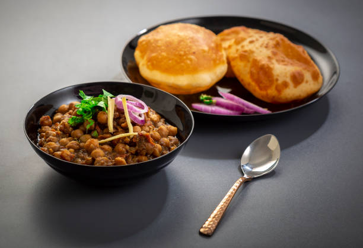

Chole Bhature
Chole Bhature is a popular North Indian dish made of spicy chickpea curry (chole) served with deep-fried,
fluffy bread (bhature). Known for its rich flavors and hearty appeal,
it’s a favorite street food and comfort meal. Often paired with pickles,
onions, and a glass of lassi, it’s a treat for food lovers.

Vada Pav
Vada Pav is a popular Mumbai street food featuring a spicy potato fritter in a bun.
It's served with chutneys and fried chilies, offering a quick, flavorful snack.

Paneer Biryani
Paneer Biryani is a flavorful Indian rice dish
cooked with marinated paneer, aromatic spices,
and herbs. It's a vegetarian favorite,
often enjoyed with raita.